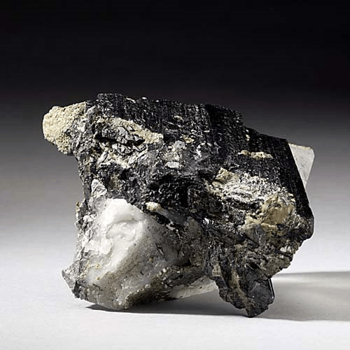
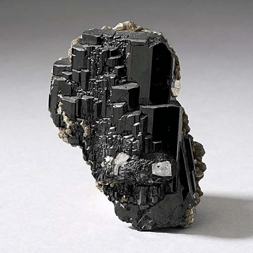

Ferberite - Fe2+WO4
Tungstates



Habit: Black. Wedge-shaped crystals, typically flattened and elongated, with faces striated; occurs in groups of bladed crystals or massive. Submetallic to metallic adamantine luster; nearly to entirely opaque. Brownish black streak.
Environment: Found in greisen or quartz-rich veins and pegmatites immediately associated with granitic intrusive rocks. Occurs in high-temperature hydrothermal veins, greisens and granitic pegmatites as well as in alluvial and eluvial deposits.
Etymology: Named in honor of Moritz Rudolph Ferber (1805-75), a factory owner and amateur mineralogist in Gera, Germany.